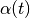
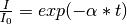
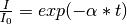

PearlMCAbsorption dialog.
Table of Contents
| Name | Direction | Type | Default | Description |
|---|---|---|---|---|
| Filename | Input | string | Mandatory | The name of the input file. Allowed extensions: [‘.out’, ‘.dat’] |
| OutputWorkspace | Output | MatrixWorkspace | Mandatory | The name of the input file. |
Loads an existing file of pre-calculated or measured absorption coefficients for the PEARL instrument.
If the file contains “t=” on the first line then the number following
this is assumed to be the thickness in mm. The values in the second
column are assumed to be . Upon reading the file the
 values for transformed into attenuation coefficients via
.
values for transformed into attenuation coefficients via
.
If the file does not contain “t=” on the top line then the values are
assumed to be calculated  values and are simply
read in verbatim.
values and are simply
read in verbatim.
Categories: AlgorithmIndex | CorrectionFunctions\AbsorptionCorrections
Python: PearlMCAbsorption.py (last modified: 2018-10-05)
{kind=link}